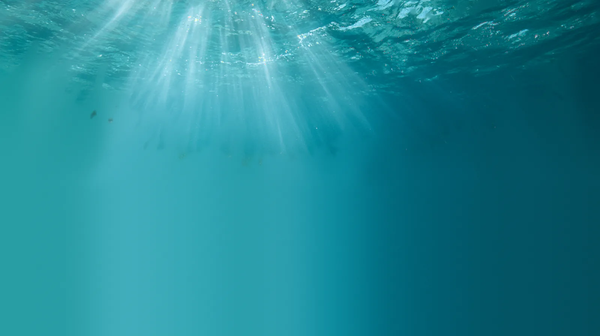

Five metres down, in the Posidonia
seagrass meadow
The swell
Each passing wave moves the water near the bed back and forth, so the leaves sway with it every six seconds or so, and lie over further when a set comes through.
Monami
A slow current shears over the top of the canopy and rolls up into vortices. As each one passes, a wave of bending runs across the meadow.
The salema
Almost nothing eats the living leaf. The salema does: a school drifts in over the meadow, a fish drops to a leaf tip for two or three twisting bites, and swims back up into its place.